Amanojaku's Den
This is my personal website where I write down all the things I like so if I get into an accident where I hit my head and lose all my memories; I can just rewatch the things I like and become the same person again. Amanojaku is a cool character from Ghost Stories and I am his number one friend.
I am a highschooler. I don't do anything. I don't like to wear my retainers; so they hurt when I finally decide to.
My favorite colour is purple.
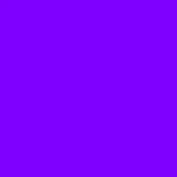
My favorite animal is cat. I like bombay cats.
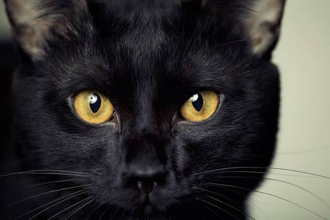
My favorite food is shrimp. I also like Taco Bell 5 dollar meal which includes a taco, a burrito, a medium drink,and crisps just for 5 dollars.
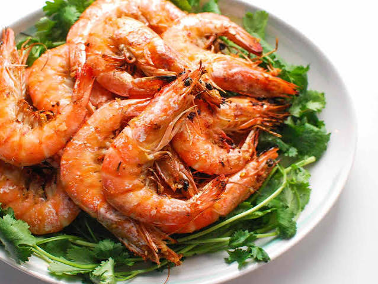
My favorite class is maths. 5
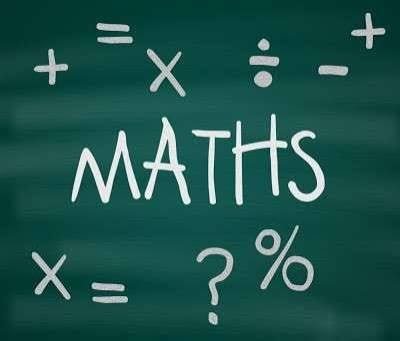
My favorite number is 14
My favorite water is distilled water
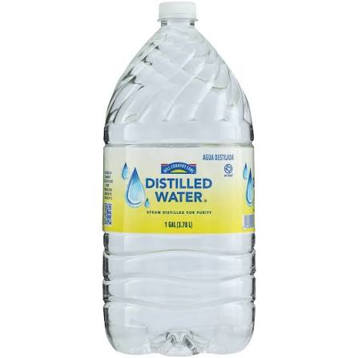
TopI am addicted to Youtube.
I don't do anything without a Youtube video turned on.
My Favorite Youtuber is Videogamedunkey
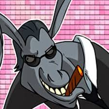
He makes videogame reviews he is so smart and funny i watch all his video haha i rate him 5 stars, rest in piece.
My favorite video of his is when he played Bookworm deluxe
I also like cool smart youtubers like Micheal Reeves because he is smart and makes cool robots
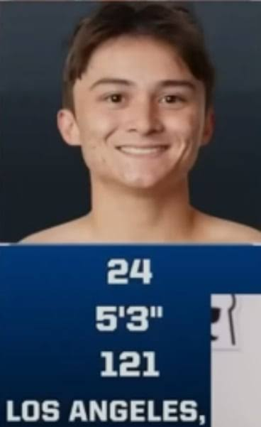
My favorite video is when he made the dog robot
I also like cool Anime; my favorite anime is Ghost Stories because it is niche and I have it on DVD
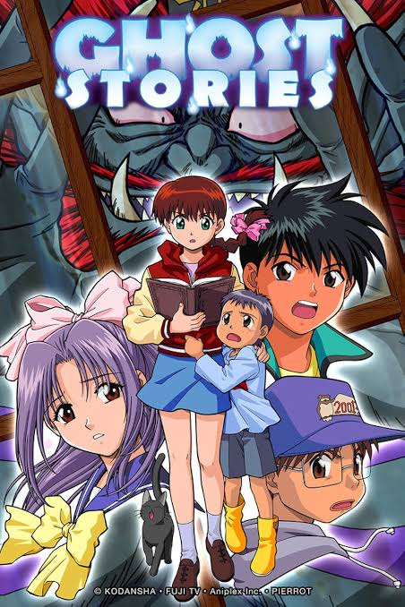
TopMy most favorite videogame is Banjo Kazooie and I play it on my xbox 360 like a true og
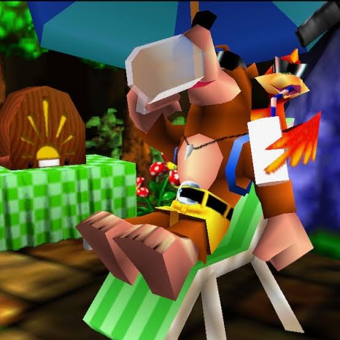
I pirated it after jailbreaking my xbox 360 it's really easy all you need is a USB drive and 3 files
I also like Persona 5 because it looks cool
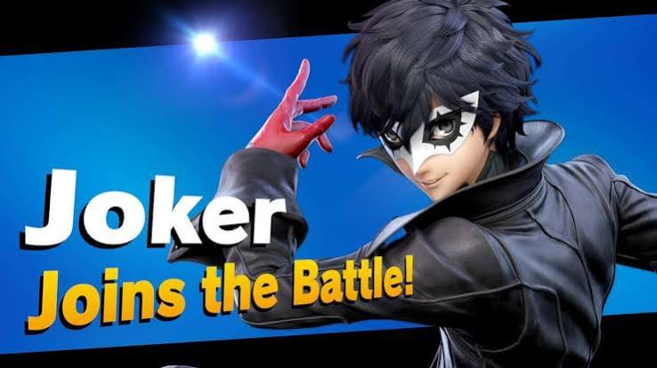
Lastly, I like Yokai Watch because Jibanyan is sooo cool and it is better than Pokemon
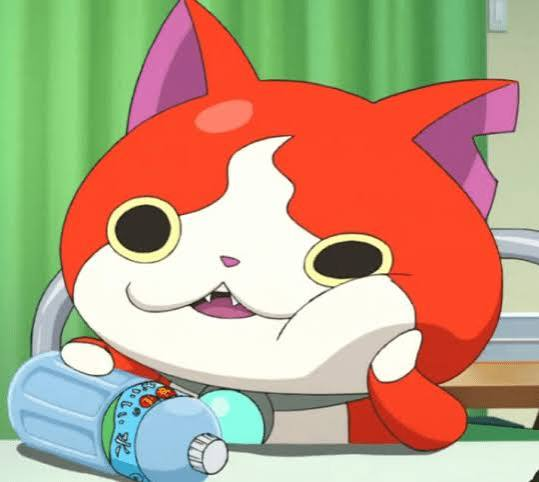
I have a yokai watch medallion of him.
TopLearn how to speak French, it is very cool.
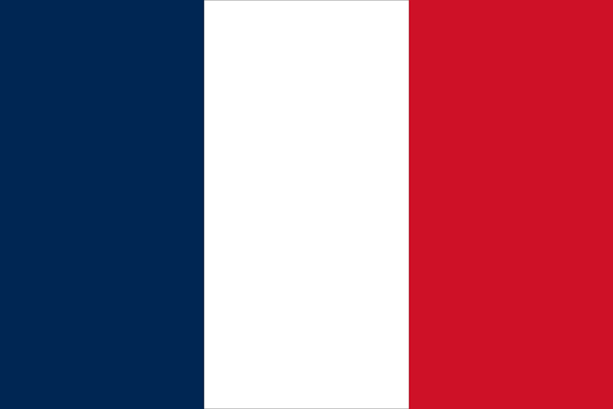
I did Duolingo French on my phone for like 2 years and tested into 3 years of French in school credits
Learn how to swim really really fast.
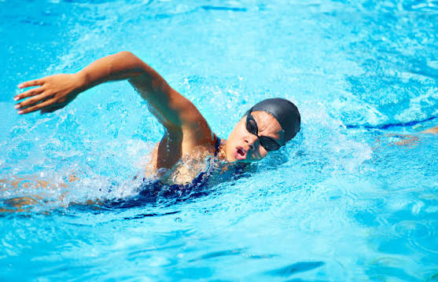
Swimming is fun but everytime I try the butterfly; I always drink water. I think they should make pool water out of non-conductive water so you can bring your phone with you
Please learn how to cut hair
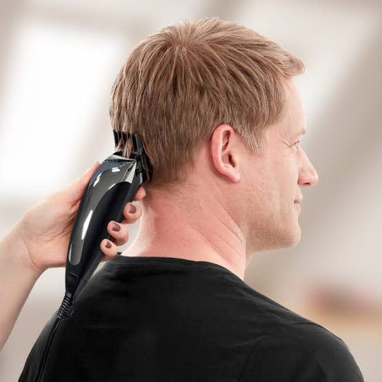
This will save you so so so so SOOO much money. Cutting hair is NOT hard and you should NOT pay so much for one. This is like 100 dollars every month which is like 1200 every year for free.
TopHere are songs I like; they are mostly videogame songs because I am less than 18 years old.
Instead of using Spotify, just download a free mp3 player on the appstore and download all your songs. You can still make multiple playlists with shuffle and use cobalt.meowing.de to convert from video to mp3 but don't tell anyone keep it niche.
Banjo Kazooie - Main TitleITS A MASTAPIECE CLASSIC CLASSIC CLASSIC I WHISTLE THIS EVERY DAY OF MY LIFE CLASSIC CLASSIC CLASSIC the little "na na na boo boo" thing that kazooie does is CLASSIC THis is a classic I listen to this every day THis makes me want to learn the Banjo and play it infront of other people and find people who understand this niche reference
Banjo Kazooie - Mumbo's MountainI like the remix on Spotify more with the Jinjo sound effects added. The Smash Bros remix is also better.
Banjo Kazooie - Freezezey PeakIt's peak I whistle the trumpet part every time
Banjo Kazooie - Spiral MountainI ran out of things to say
I only like "fast" jazz songs because I am a fake jazz fan.
Buddy Rich - NutvilleI am sweaty after listening.
Chick Corea - Armando's RhumbaSounds so sophisticated and cool. I clap along when i listen.
Chick Corea - SpainCLASSIC CLASSIC CLASSIC THIS WILL CHANGE YOUR LIFEEE CLASSIC CLASSIC EVERY 5 SECONDS IS A NEW SONG. SO MANY NICE BITS. THis is a faster remix of the original which is slower it's faster so it's better.
Stan Kenton - MalaguenaBattle music
Fab five freddy told me everybody's fly; djs spinning and i said my mind. flash is fast, flash is cool.
Hysteric Blue - Grow UpDonut
Enjambre - Madrugadaquiero escurrir mi cara mormada; no quiero encontrarte en madrugada; quiero que me dejes descan- sar. Mi conscienscia no puedo sedar. Para no sentir culpa; para nos entir orgullo; para no sentir que lo que yo tengo; es nomas tuyoo; para no sentir dolor
TopDO NOT TAKE BAND IN MIDDLE SCHOOL PLEASE I PROMISE YOU IT'S NOT WORTH IT. It's not as fun as you think it will be; it's not as fulfilling; it's so much work for nothing. No pay off. You will stay after school for 2 hours every friday for NOTHING. And you will have to go to school during SUMMER. Your school band sucks. They are 3rd best band out of like the 4 highschools in the region. Bands get so many participation awards for doing NOTHING. Band kids are annoying, band directors are annoying, the songs are boring, your part is boring, Your passion will not be fulfilled in a school band. It is not interesting, impressive, or unique as an extracurricular. There's like 100 kids in each band. Atleast play a cool instrument like saxophone, don't play the xylophone. You will drop that instrument when you graduate; you will forget everything you learned. It's also expensive, you have to rent the instrument and buy all the other stuff.
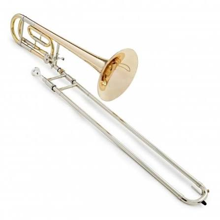
Do your homework early please. Middle school work is not that hard. High school work is not that hard most of the time. As long as you turn things in you'll get a 80. If you did all your work immediately you would never worry. Don't wait until the period before the test to study. Stop playing tetris and chess in class everyday; you're not even that good. Annotating stories is really boring and pointless but just do it. The teacher has to grade 100 other kids so she isn't really looking too deep into it so don't overthink. Class rank and GPA don't even matter at all as long as you aren't failing.
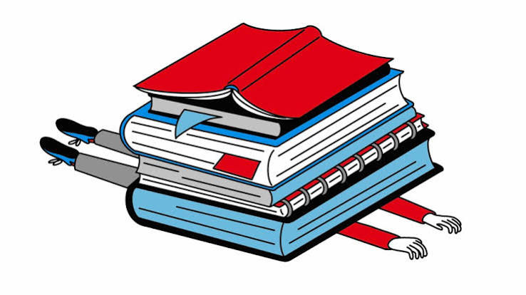
I was falling asleep every single day in class. Please sleep. Every hour you stay up is 5 points off on every test. If you got enough sleep you would get so much more work done. You would feel so much more energized and productive. Also eat healthy things. If you eat a family sized bag of spicy Doritos, then the Dorito's aren't really that unhealthy themselves. It's that; that bag of Doritos are your meal for that day. Doritos are not nutritionally valuable. It's like not eating. Imagine if you didn't eat for a day. Of course you aren't energetic; you didn't eat anything. Spicy doritos are so good; I'm addicted to capsaicin but it's not worth it. Your nose will be stuffy; your fingers will be stained with red-40; but your stomach is gonna hurt and you're going to fall asleep. Eat more chicken.
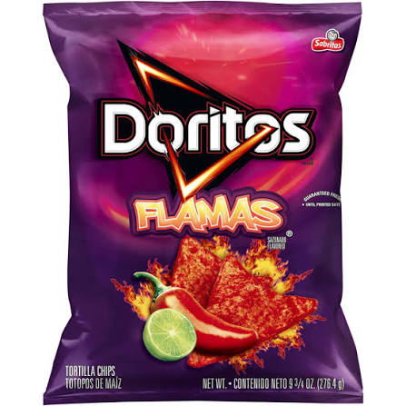
Top